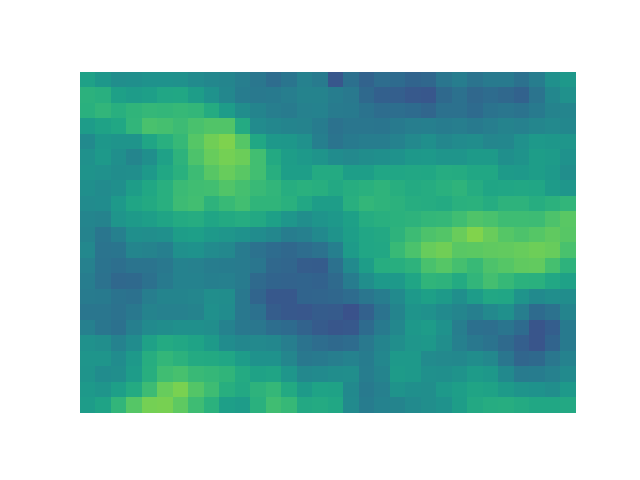
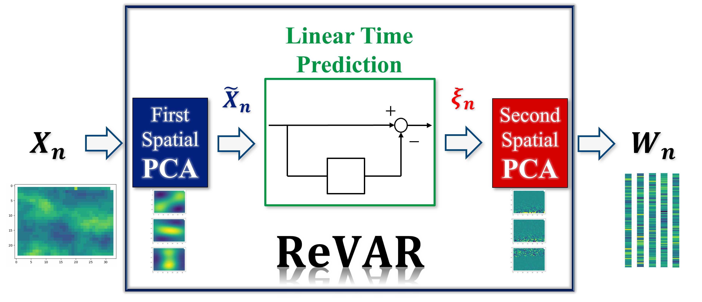
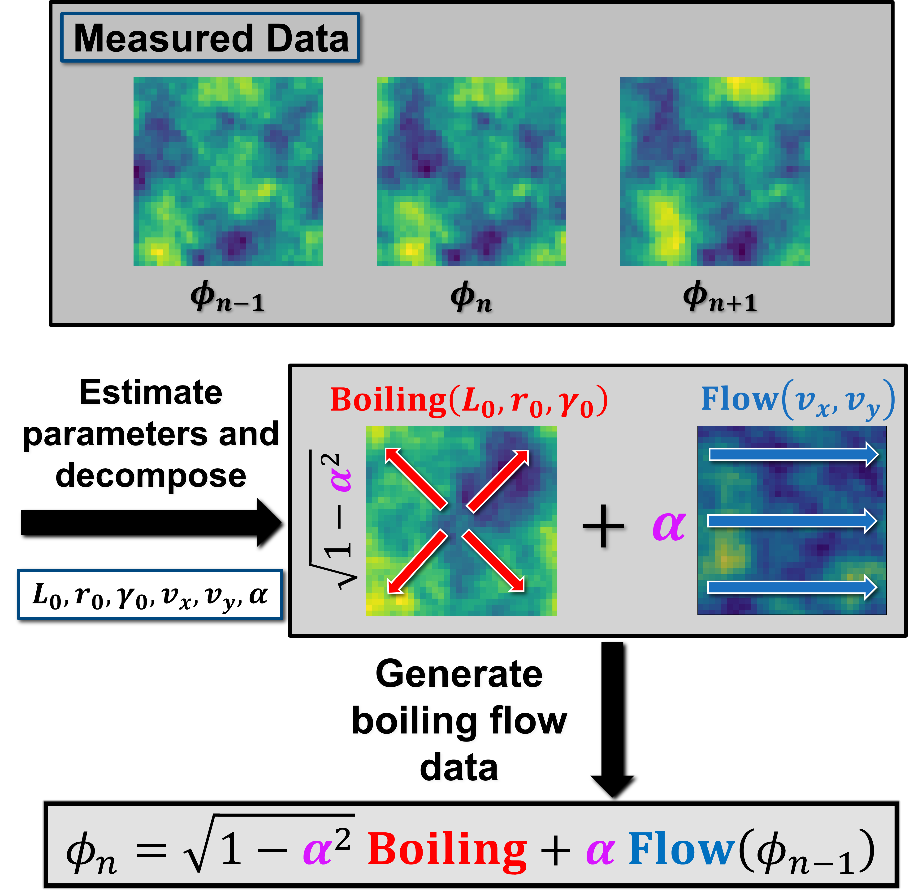

PhD Dissertation: Synthetic Data Generation for Aero-Optics
The Aero-Optics Field
My graduate research focuses on aero-optics, a field studying the adverse effects of aerodynamic turbulence on light propagation. When light passes through aerodynamic turbulence, it scatters throughout the atmosphere. By the time this light reaches a receiver or camera, the signal is degraded, resulting in blurred images, signal loss, or reduced beam intensity. Collectively, these phenomena are known as aero-optic effects.
These distortions pose significant challenges for airborne optical systems, such as in laser communications, tracking/range finding, and directed energy applications. By accurately simulating these effects, we can develop and test Adaptive Optics (AO) correction algorithms without the prohibitive cost of flight testing.
Phase Screens
Aero-optic effects are quantified by measuring the optical phase of a light wave passing through turbulence. Turbulence induces spatiotemporal phase delays, or phase errors, which cause the distortion of received signals. We visualize these errors as phase screens, which display the spatial distribution of the phase delay.

A major challenge in aero-optics is accurately simulating phase screens that match experimental observations. My work addresses this by generating synthetic aero-optic phase screen data. Rather than relying on computationally expensive approaches like computational fluid dynamics, we apply techniques from computational imaging and signal processing.
I have explored two methods to address this problem: (1) ReVAR (a data-driven method) and (2) Boiling Flow (a Fourier-based method).
ReVAR (Re-whitened Vector AutoRegression)
ReVAR introduces a novel data-driven approach to generating synthetic phase screens. Rather than relying solely on explicit physical equations, ReVAR learns the spatiotemporal evolution of phase screens directly from empirical recordings. Unlike Boiling Flow, which assumes a simplified physical model, ReVAR employs much more general statistical models to capture the complex, non-stationary statistics inherent in aerodynamic turbulence. Furthermore, ReVAR is fully automated and capable of modeling intricate spatiotemporal correlations that are often observed in real turbulence but are outside the scope of the Boiling Flow model.
The algorithm operates by converting the complex correlations in measured data to independent noise components. New data is generated by inverting this process, transforming random noise into realistic, correlated turbulence patterns.

We have demonstrated that this data-driven approach captures spatiotemporal correlations of measured data more accurately than traditional methods, producing highly accurate simulations for testing optical systems. The corresponding paper has been accepted for publication in Journal of the Optical Society of America A.
See Publications and Presentations for full lists of related work.
Boiling Flow
The boiling flow algorithm provides a computationally efficient method for simulating the optical impact of turbulence within the atmosphere. It decomposes turbulence dynamics into two primary components: flow, representing the bulk transport of air (wind), and boiling, representing the random fluctuations within the atmosphere itself.

By combining these mechanisms, we create a realistic model of turbulence evolution over time. We use this model to generate synthetic phase screens.
My research enhances this method by calibrating it against measured turbulence data. We developed an automated parameter estimation framework to tune simulation parameters—such as flow velocity and boiling rate—directly from measured phase screen data. We also extended the model to handle spatial anisotropy, ensuring that the synthetic turbulence statistically replicates the complex characteristics observed in flight tests. Consequently, researchers can input empirical data into our algorithm to generate synthetic realizations that faithfully reproduce real-world conditions within the constraints of the boiling flow model. The corresponding paper has been accepted for publication in Optical Engineering.

See Publications and Presentations for full lists of related work.
Summary & Future Directions
My research bridges the gap between classical physics-based modeling and modern data-driven approaches. While Boiling Flow offers a computationally efficient and interpretable model ideal for rapid prototyping, ReVAR demonstrates the power of statistical modeling to capture complex, non-stationary correlations that analytical models may miss.
Current Focus: I am currently validating the ReVAR algorithm against complex measured data sets and exploring algorithmic generalizations that allow users to customize the structures used in the parameter estimation and data generation processes. Furthermore, I am investigating approaches to extend 2D phase screens beyond limited apertures to provide expanded datasets for AO testing.